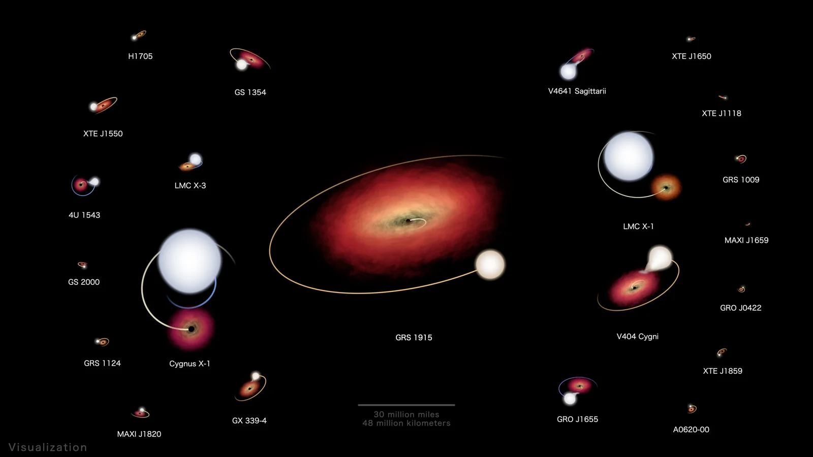

Cygnus X-1

Overview
Cygnus X-1 is a black hole about 21 times the mass of the Sun, located in our own Milky Way galaxy in the constellation Cygnus. It orbits a giant blue star and pulls gas away from it. As the gas spirals toward the black hole, it forms a disk that heats up to millions of degrees and shines brightly in X-rays. Cygnus X-1 was one of the first objects that scientists widely agreed was a black hole.
Interesting Facts
- In 1974, Stephen Hawking bet physicist Kip Thorne that Cygnus X-1 was not a black hole. He admitted he lost the bet in 1990.
- The black hole and its companion star orbit each other once every 5.6 days.
Quick Facts
- Type: Stellar-mass black hole
- Distance from Earth: About 7,200 light-years
- Size: About 21 times the mass of the Sun; its event horizon is only about 77 miles across
- Discovery: Discovered as an X-ray source in 1964